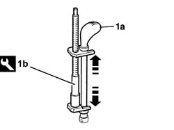
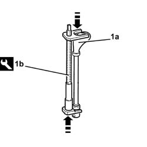
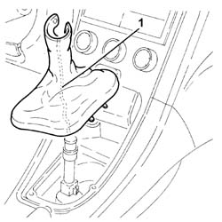
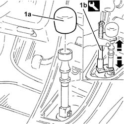
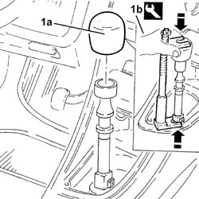
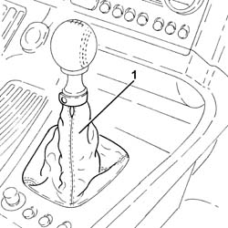
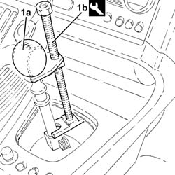

2125C24 gear lever knob - r + r
- Path
- Procedures > 21 GEARBOX > 2125 MANUAL GEARBOX EXTERNAL CONTROLS > 2125C manual gearbox external control (cables) > 2125C24 gear lever knob - r + r
- Kind
- repair procedure (removal / refitting; the operation number is the code)
- Applies to
- engines: 1.6 TS , 1.8 TS, 2.0 JTS, 2.5 V6, 3.2 V6, 1.9 JTD 8v , 1.9 JTD 16v, 2.0 JTS, 2.4 JTD 10v, 2.4 JTD 20v; all production periods
- Interactive page
- https://sloeber94.github.io/elrnDB-a156/en/#/3237934
Applies to: engines: 1.6 TS , 1.8 TS, 2.0 JTS, 2.0 JTS; all production periods
 Removing
Removing
 Refitting
RefittingRemove the gear lever boot.
1. Remove the gear lever grip (1a) with the tool (1b) positioned as illustrated in the diagram and undo the bolt until it is completely removed.
 | Name | Country |
|---|---|---|
1b | Extractor | 1.870.668.000 |

Applies to: engines: 1.6 TS , 1.8 TS, 2.0 JTS, 2.0 JTS; all production periods
Refitting
Removing1. Place the gear lever knob (1a) back in its housing using the tool (1b) positioned as illustrated in the diagram and adjust the bolt until the fitting is completed.
| Name | Country |
|---|---|---|
1b | Extractor | 1.870.668.000 |

Applies to: engines: 1.6 TS , 1.8 TS, 2.0 JTS, 2.0 JTS; all production periods
Place the gear lever boot back in its housing.
Applies to: engines: 2.5 V6, 3.2 V6, 1.9 JTD 8v , 2.4 JTD 10v; all production periods
Removing
Refitting1. Remove the gear lever boot.

Applies to: engines: 2.5 V6, 3.2 V6, 1.9 JTD 8v , 2.4 JTD 10v; all production periods
1. Remove the gear lever grip (1a) with the tool (1b) positioned as illustrated in the diagram and undo the bolt until it is completely removed.
| Name | Country |
|---|---|---|
1b | Extractor | 1.870.668.000 |

Applies to: engines: 2.5 V6, 3.2 V6, 1.9 JTD 8v , 2.4 JTD 10v; all production periods
Refitting
Removing1. Place the gear lever knob (1a) back in its housing using the tool (1b) positioned as illustrated in the diagram and adjust the bolt until the fitting is completed.
| Name | Country |
|---|---|---|
1b | Extractor | 1.870.668.000 |

Applies to: engines: 2.5 V6, 3.2 V6, 1.9 JTD 8v , 2.4 JTD 10v; all production periods
Place the gear lever boot back in its housing.
Applies to: engines: 1.9 JTD 16v; all production periods
Removing
Refitting1. Release and remove the manual gearbox lever boot.

Applies to: engines: 1.9 JTD 16v; all production periods
1. Remove the gear lever grip (1a) using the tool (1b).
| Name | Country |
|---|---|---|
1b | Extractor | 1.870.668.000 |

Applies to: engines: 1.9 JTD 16v; all production periods
Refitting
RemovingPlace the gear lever grip back in its housing using the tool.
| Name | Country |
|---|---|---|
- | Extractor | 1.870.668.000 |
Place the manual gear lever boot back in its housing.
Applies to: engines: 2.4 JTD 20v; all production periods
Removing
Refitting1. Release and remove the manual gearbox lever boot.
Applies to: engines: 2.4 JTD 20v; all production periods
1. Remove the gear lever grip (1a) using the tool (1b).
| Name | Country |
|---|---|---|
1b | Extractor | 1.870.668.000 |
Applies to: engines: 2.4 JTD 20v; all production periods
Refitting
RemovingPlace the gear lever grip back in its housing using the tool.
| Name | Country |
|---|---|---|
- | Extractor | 1.870.668.000 |
Place the manual gear lever boot back in its housing.
Topics that link to this page (28)
- C01 GEAR CONTROL HARDENING
- 2125C18 reverse inhibitor - replace
- 5010B24 under-facia air ducts r r
- 5010B46 central air duct to rear seat - arrange
- 5010B47 side air duct to rear seat(one), lh or rh - r r
- 5010D30 passenger compartment air temperature sensor - r+r following electrical wiring check operation
- 5020A10 heater box - r+r
- 5020B10 heater control support - r+r
- 5020B28 air conditioner symbol light bulb/s - includes control panel r+r
- 5020B31 air distribution flap control cable(one) - r r
- 5020B42 air mixer flap control cable - r+r
- 5020B80 heater system wiring bundle - r r or replace
- 5040C10 air conditioner box - r+r
- 5040D18 air conditioner control unit - r r
- 5040D90 air conditioner system wiring bundle - r r
- 5505A26 bonnet wiring - r r
- 5505C31 under-facia wiring - r r
- 5505C41 cabin wiring - r r
- 5560C51 combined analogue control panel - r+r or replace
- 5570T32 lead from coaxial to radio - r r
- 5580C86 side bag wiring harness (one) lh or rh - r r or replace
- 5580E18 anti-theft device w/l - r+r following electrical wiring check
- 7040A10 instrument facia trim - r+r
- 7040A60 under facia trim - r+r
- 7040A97 facia trim support beam - r r
- 7040L10 cabin floor carpet - r r
- 7040L20 tunnel trim - r r
- 7065A80 pre-tensioner wiring - r r